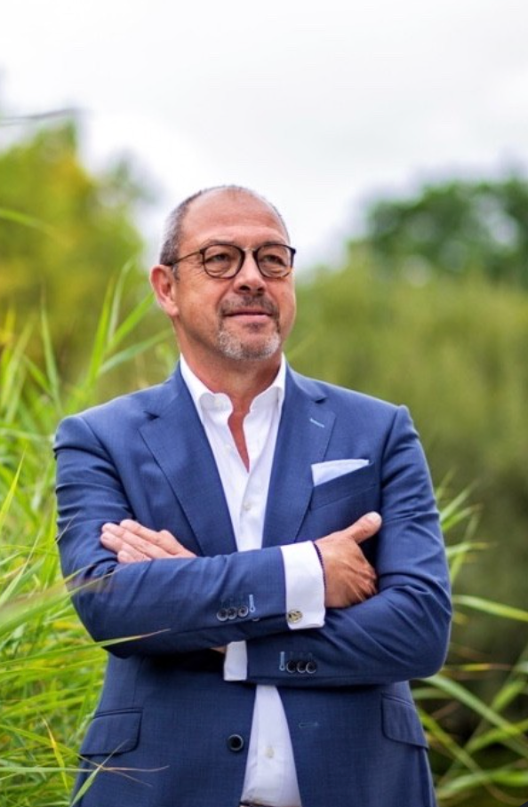

Prijs, kwaliteit en leveringszekerheid zijn al jaren bepalende factoren binnen inkoop. Maar welke rol spelen duurzaamheid, circulariteit en Europese regelgeving wanneer de uiteindelijke inkoopbeslissing wordt genomen?
Start de vragenlijst
De wereld van verpakkingsinkoop verandert snel. Europese regelgeving zoals de Packaging and Packaging Waste Regulation (PPWR) stelt nieuwe eisen aan verpakkingen, circulariteit en materiaalgebruik.
Tegelijkertijd blijft de dagelijkse realiteit voor inkoopprofessionals bestaan: duurzaamheid moet worden afgewogen tegen kosten, kwaliteit, beschikbaarheid, compliance en leveringszekerheid.
Deze afwegingen staan centraal in mijn Doctor of Business Administration (DBA) onderzoek naar ESG en de inkoop van kunststof verpakkingen binnen Nederlandse organisaties.
Voor het onderzoek zoek ik professionals die vanuit hun functie betrokken zijn bij:
De vragenlijst duurt ongeveer 10 minuten en richt zich op de factoren die beslissingen rondom kunststof verpakkingen beïnvloeden.
Onderwerpen zijn onder andere:
Naast de vragenlijst voer ik verdiepende gesprekken met een selecte groep professionals uit de praktijk.
Tijdens een interview van circa 45 minuten gaan we dieper in op de werkelijke afwegingen achter inkoopbeslissingen.
Niet alleen wat organisaties op papier nastreven, maar vooral:
Wat gebeurt er wanneer prijs, duurzaamheid, beschikbaarheid en compliance met elkaar botsen?
Uw deelname draagt bij aan onafhankelijk onderzoek naar de manier waarop ESG en duurzaamheid daadwerkelijk worden geïntegreerd binnen professionele verpakkingsinkoop.
Mijn onderzoek richt zich op de integratie van ESG-principes binnen strategische verpakkingsinkoop en specifiek op de afweging tussen kosten, duurzaamheid, supply-chainrisico's en Europese regelgeving.
Naast mijn DBA-onderzoek ben ik al vele jaren actief binnen procurement en de verpakkingsindustrie. Hierdoor combineert het onderzoek een wetenschappelijke benadering met de dagelijkse praktijk van verpakkingsinkoop.
Bent u betrokken bij de inkoop of besluitvorming rondom verpakkingen? Dan nodig ik u graag uit om uw ervaring te delen.
10 minuten van uw tijd kan waardevolle inzichten opleveren voor de toekomst van duurzame verpakkingsinkoop.
Doe mee aan het onderzoekAlle onderzoeksgegevens worden vertrouwelijk behandeld en geanonimiseerd verwerkt. Individuele respondenten en organisaties zijn niet herkenbaar in de uiteindelijke onderzoeksresultaten.